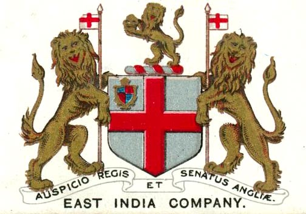

This was a company that traded the Indian subcontinent. This was the first company to trade with India from the UK. It accounted for over half the world’s trade and was valued at 7 trillion dollars. It also was the beginning of the British Empire in India. It was trading in commodities such as cotton, silk and opium. It grew to control vast amounts of land in India, commonly referred to as Company Raj. The East India Company ended when the Indian Rebellion of 1857. The government of India Act of 1858 gave the British government full control, creating the British Raj.
The British Raj was a colony ruled by the monarch, which encompassed the entire Indian subcontinent and lasted from 1858 to 1947. They allowed the kings to rule, but they controlled the kings. These small states were called princely states. These states all followed British legal code and the British swiftly destroyed any revolt quickly. They were able to quickly take over all of India because of their technological advancement. It fell apart after the independence movement and formally separated from India in 1947.